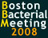

News Archives: Nov 1, 2003 - Jan 6, 2017
39 stories listed.
|
How Not to Wear Out a Welcome
- Dec. 12, 2008
Just as dinner party guests who linger at the table ... Tags: 2008, Matthew Michael, Molecular Cell, publication |
|
|
Wnts on the Brain: Requirement of Wnt Signaling in CNS Vasculature Development
- Dec. 10, 2008
All tissues in our bodies require blood vessels for oxygen ... Tags: 2008, Andrew McMahon , Science, publication |
|
|
Annual Holiday Gift Drive (accepting donations until December 18, 2008)
- Nov. 25, 2008
For the fourth year in a row, MCB's Human ... Tags: 2008, charitable work |
|
|
Dissecting Transcriptional Network Structure and Function
- Nov. 19, 2008
The gene expression program in a cell is set in ... Tags: 2008, Erin O'Shea, Nature Genetics, publication |
|
|
Annual Thanksgiving Food Drive (Tuesday, November 18 - Tuesday, November 25, 2008)
- Nov. 14, 2008
For the third year in a row, MCB Building Operations ... Tags: 2008, American Academy of Arts and Sciences, Food Drive, charitable work |
|
|
Alexander Rich to Deliver 2008 John T. Edsall Lecture
- Nov. 10, 2008
Alexander Rich, M.D., the William Thompson Sedgwick Professor of ... Tags: 2008, John T. Edsall Lecture, lecture |
|
|
A Quantitative Model of Transcription Factor–activated Gene Expression
- Oct. 27, 2008
One of the main challenges in the postgenomic era is ... Tags: 2008, Erin O'Shea, Nature Structural & Molecular Biology, publication |
|
|
Decoding Regulatory Circuitry in Mammalian Limb Development
- Oct. 10, 2008
The vertebrate limb has been one of the central models ... Tags: 2008, Andrew McMahon , Genes and Development , publication |
|
|
MCB would Like to Extend a Special Welcome to Our Five New Faculty Members
- Oct. 1, 2008
Briana Burton, Philippe Cluzel, Vlad Denic, Daniel Needleman, Sharad Ramanathan. Tags: 2008 |
|
|
Matthew Meselson's "Beautiful Experiment" Turns Fifty
- Sept. 22, 2008
Fifty years ago, Matthew Meselson and Franklin Stahl – a Caltech ... Tags: 2008, Matthew Meselson |
|
|
HHMI Outreach Summer Program 2008
- Sept. 15, 2008
In mid-July, Bauer Café regulars might have noticed the threads ... Tags: MCB Outreach Program, 2008 |
|
|
Perceiving Smells with Sparse Connections
- Sept. 11, 2008
Many regions of the brain are organized in such a ... Tags: 2008, Markus Meister, Neuron, publication |
|
|
Engineering Binocularity in the Zebrafish Brain
- Sept. 9, 2008
A major outstanding question in neurobiology is how the brain ... Tags: 2008, Florian Engert, Nature Neuroscience, publication |
|
 |
Seminar to Celebrate Darwin's Bicentennial
- Aug. 8, 2008
On September 11, 2008, Harvard’s Department of Molecular and ... Tags: 2008, symposium |
 |
Trigger for Brain Plasticity Identified
- Aug. 8, 2008
Researchers have long sought a factor that can trigger the ... Tags: 2008, Cell, Takao Hensch, publication |
|
Self-renewal in the Kidney: A Developing Story
- Aug. 7, 2008
The kidney is a remarkable organ. Its actions maintain an ... Tags: 2008, Andrew McMahon , Cell Stem Cell, publication |
|
|
Piggy-backing Meiotic Chromosomes
- June 27, 2008
Movement plays important fundamental roles in basic chromosomal processes. Motion ... Tags: 2008, Cell, Nancy Kleckner, publication |
|
|
Watching Synapses Change in Animals
- June 26, 2008
It is widely assumed that alterations in synaptic connections between ... Tags: 2008, Jeff Lichtman, Nature Neuroscience, publication |
|
|
Astrocytes Spy on Neuronal Conversation to Bring a Rush of Blood to the Head
- June 25, 2008
The human brain represents approximately 2% of the total body ... Tags: 2008, Neuron, Venkatesh Murthy, publication |
|
|
The Four Phases of Richard Losick's Microbial Career
- June 16, 2008
A lot has changed since microbiologist Richard Losick came to ... Tags: 2008, Richard Losick, profile |
|
|
Undergraduates Win Awards for Their Research in MCB Labs
- June 2, 2008
Two undergraduates working on research projects in MCB laboratories—Katie ... Tags: 2008, Hoopes Prize |
|
|  |
14th Annual Boston Bacterial Meeting to be Held at Science Center June 12-13
- May 30, 2008
The Boston Bacterial Meeting (BBM) 2008 will take place on ... Tags: 2008, Boston Bacterial Meeting |
|
A Common Aquatic Animal's Genome can Capture Foreign DNA
- May 29, 2008
Long viewed as straitlaced spinsters, sexless freshwater invertebrate animals known ... Tags: 2008, Matthew Meselson, Proceedings of the National Academy of Sciences, publication |
|
|
High School Students Gain from Hands-on Learning through MCB's Outreach Program
- May 20, 2008
As fifteen teenagers from Cambridge Rindge and Latin High School ... Tags: MCB Outreach Program, 2008 |
|
|
Huda Zoghbi to give Prather Lectures May 7,8,9
- May 1, 2008
This year's Prather Lectures will be delivered by Huda ... Tags: 2008, Prather Lectures, lecture |
|
|
Chromatin — A One-Stop Engineering Solution for Compacting DNA and Parameterizing Gene Behavior
- April 24, 2008
If stretched end-to-end, the DNA inside a single human cell ... Tags: 2008, Erin O'Shea, Nature, publication |
|
|
Ruth Lehman Presents 2008 Bloch Lecture
- April 18, 2008
On April 24, 2008, Dr. Ruth Lehmann, Professor of Cell ... Tags: 2008, Bloch Lecture, lecture |
|
|
First Ever Symposium in Engineering and Physical Biology (EPB)
- April 10, 2008
On Saturday, April 5, the Engineering and Physical Biology (EPB ... Tags: 2008, Engineering and Physical Biology Symposium, symposium |
|
 |
Microbial Science Symposium to be Held Saturday, April 5
- April 7, 2008
Microbes (including bacteria, viruses, fungi, and protests) are ubiquitous on ... Tags: 2008, Microbial Sciences Initiative at Harvard, Microbial Sciences Symposium, symposium |
|
Small but Mighty
- April 3, 2008
In a behaving animal, the brain processes information from sensory ... Tags: 2008, Florian Engert, Nature Neuroscience, publication |
|
|
A Neural Code Based on Spike Timing in the Retina
- April 2, 2008
The process of vision begins in the retina. This neuronal ... Tags: 2008, Markus Meister, Science, publication |
|
|
What's "Up" with Mouse Vision?
- March 27, 2008
A mouse is small, close to the ground. Hawks and ... Tags: 2008, Joshua Sanes, Markus Meister, Nature, publication |
|
|
Andres Leschziner: Looking at Flexibility of Macromolecules
- Feb. 25, 2008
What type of research might appeal to a young scientist ... Tags: 2008, Andres Leschziner, profile |
|
|
Beauty in the Brain of the Beholder
- Feb. 25, 2008
Jean Livet recently received first place the Olympus BioScapes Digital ... Tags: 2008, Jeff Lichtman, Olympus BioScapes Digital Imaging Competition, awards |
|
|
2008 Daffodil Days
- Jan. 26, 2008
MCB supports the American Cancer Society's Daffodil Days Tags: 2008, charitable work |
|
|
Dulac Lab: Small RNAs and the Sense of Smell
- Jan. 22, 2008
Modern genetics textbooks highlight the concept of the ‘central dogma ... Tags: 2008, Catherine Dulac, Neuron, publication |
|
|
Jeruzalmi and Verdine Labs: Structure of a First Responder to Chemical Attacks on DNA
- Jan. 22, 2008
Genomic DNA is under constant attack by various damaging agents ... Tags: 2008, David Jeruzalmi, Gregory Verdine, Journal of Biological Chemistry |
|
|
Nicole Francis New Scholar Awardee in Aging
- Jan. 22, 2008
Harvard Assistant Professor of Molecular and Cellular Biology Nicole Francis ... Tags: 2008, New Scholar Awardee in Aging, Nicole Francis, awards |
|
|
Venkatesh Murthy Takes the Road Less Traveled
- Jan. 22, 2008
Looking back on his career, Venkatesh (Venki) Murthy sees no ... Tags: 2008, Venkatesh Murthy |